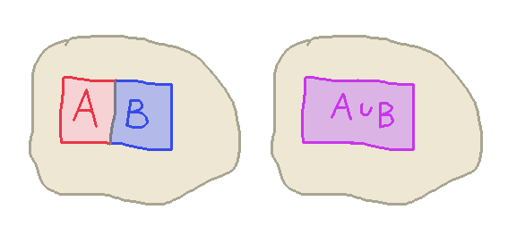

Naive Topology Intuitions and Logic
While playing around a bit with CAD programs lately, I realize I
have two separate — and potentially contradictory! —
bundles of intuitions about shapes in space ought to undergo
unions and intersections.
Shapes to a Topologist
One I'll call the "topologist" idea of shape. A shape is a subset of $\R^n$,
and unions are set-theoretic unions, and intersections are set-theoretic intersections.
Naive Shapes
The other I'll call the "naive" idea of shape, but I don't mean that as an insult.
It actually strikes me as quite natural. It's what I expect and get from CAD software that
manipulates 3-d shapes. According to this intuition, if I take two equal-sized
squares side-by-side,
- If I compute their union, I should get a rectangle twice as wide as it is tall.
- If I compute their intersection, I should get the empty shape.

The Problem
Here's why this is at odds with the topologist's intuition: ask yourself, is
the boundary of the square in the square? That is, are we dealing with an
open square $(0,1) \x (0,1)$ or a closed square $[0,1] \x [0,1]$? If open,
then the union of the two squares $(0,1) \x (0,1) \cup (1,2) \x (0,1)$
is not the rectangle $(0,2) \x (0,1)$. If closed, then the intersection
of the two squares is not empty!
A Solution I Don't Like
We could say that the squares are products of half-open intervals like
$[0,1) \x [0,1)$, and that would make this particular example
work, (in the sense that conditions (1) and (2) above are
satisfied) but it's ugly and asymmetric, and I'm not sure if
there's any sensible story to tell about rotation. Surely at least
saying the rotation of a shape is the pointwise rotation of the
points belonging to it can no longer be the case, since this would
break the half-open-in-the-correct-direction invariant that we're
tacitly introducing.
A Solution I Like
My goal is to give some formal account of what the "Naive Shapes" idea
is saying. I feel like a core part of it is believing that
If I try to ask whether the boundary of these shapes "belongs to" the shapes
or not, this is a meaningless question
So I want to do something like quotienting out by the presence or
absence of boundary points. Alternatively, I can think of it as
picking out a subset of the possible shapes that are
"well-behaved", which excludes lower-dimensional shapes like the
single face that is the intersection of two squares sitting next
to each other. Then the operation of taking their intersection is
modified to instead be finding the "best approximation to their
intersection by a well-behaved shape"
Well-Behaved Shapes
After some rumination, I decided that a definition I like is:
A subset of $\R^n$ is well-behaved if it is equal to the interior of its closure.
because this means the set itself is open, and also doesn't have any weird "holes"
that closure would have repaired.
Cut off by LLM
I had a longer bit of explanation and proof planned for this post, but then I popped
Is there a standard name for the property of a subset X of a topological space where X is equal to the interior of its closure?
into ChatGPT, and it turns out this is in fact a well-known property of subsets
of a topological space: the property is called being regular open.
The interesting fact is that these do form a complete boolean
algebra. Being regular open is preserved by intersection, and
although it isn't preserved by union or complementation , you can
define a "corrected union"
\[ A \sqcup B = \mathrm{Int}(\mathrm{Clo}(A \cup B))\]
and a "corrected complement"
\[ {\sim}A = \mathrm{Int}(\mathrm{Clo}(X \setminus A))\]
and these are the appropriate operations for the boolean algebra.
The Logical View
I notice the definition of regular open is the same as something that smells a lot
like (although I suppose it's strictly stronger than) the axiom that characterizes
the modal logic S5 :
if we interpret Int as $\square$ and Clo as $\dia$ in a classical modal logic interpreted
into a topological space, then we're requiring
\[ A \dashv\vdash \square \dia A \]
So, $A$ being true here is the same as A always eventually being true.
Or to see it another way, we're basically picking out the
double-negation-stable propositions from an intuitionistic point
of view, where (intuitionistic) negation is interpreted into modal
logic as $\sq \lnot$, and asking for
\[ A \dashv\vdash \square \lnot \square\lnot A \]
is just asking that $A$ is equivalent to its intuitionistic double-negation.